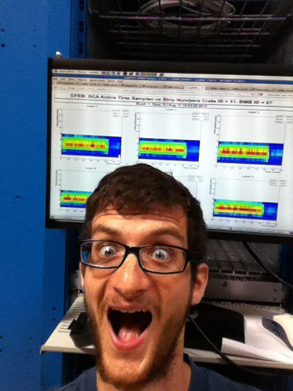

Dan King
About Me
— Projects
— Ramblings
— Talks
— Papers
About Me
In the fall of 2013, I started work on my PhD in Computer Science at
Harvard University in Cambridge,
Massachusetts. My advisor at Harvard is
Stephen Chong.
My undergrad work was on push down flow
analyses for push down automata.
In the summer of 2013 I studied Mandarin at
the Inter-University Program (IUP) for
Chinese Language
Studies. The IUP
conducts their classes on the campus of Tsinghua University. I have studied
Mandarin for two years using a hodgepodge of self-study, tutors, language
partners, and classes. At
the IUP, I solidified my
Mandarin capabilities before embarking on the time-consuming process of
obtaining a PhD.
I formerly studied Computer Science and Physics at Northeastern
University. During my early years on campus, I was a member of
the CCIS
Systems Crew and NU's chapter of
the ACM. During
my middler year, Northeastern terminology for the third of five
years, I became involved with a computer science research project that
consumed most of my free time for the last two years of my education. I tried
to keep myself busy with
personal projects when I could
spare some time from classes and research.
I took a break from my first research project in the fall and winter of 2012,
to work on the CMS experiment
at CERN. You
can read more about that, if you'd like.
Projects
- Phat Raid
- Phat Raid is a distributed file system written in Erlang. I worked on it
with a team of students
for Cloud
Big Data Systems, a whimsically named class offered by Eddie Kohler at
Harvard. Our particular contribution was to implement a RAID array with
distributed file systems. We achieved lower store latency for file sizes which
were disk bound. It also has unusual and interesting failure modes. We
describe it in this unpublished paper.
- Machine Learning in
Racket
- I took a graduate machine
learning class in
the Fall of 2013. I initially used the R language to implement the
algorithms, but I quickly became frustrated with R. This repository is a
collection of tools I built while working on the problem sets for this
class.
- Resume
- I quite like the LaTeX source code for my resume. I secretly wish I could
send application reviewers the source instead of the
PDF.
- Flow Analyzing
Compiler Compiler
- I'm developing some flow analyses and an appropriate parser-generator
framework in which to apply them. The verbalization of this project's
acronym is possibly offensive to those who speak Bostonian English.
- TeaScript
- A few years ago, after first learning about language design, I decided to
try my hand at it. The result is an unfinished s-expression based syntax on
top of JavaScript. I strove to produce readable JavaScript code while giving
the programmer nicer syntax, lexically evident scoping, and a broader set of
identifier names.
Ramblings
- Booklet Printing
- May 29 — Cambridge Twenty-Fourteen
- Blood Types and
Hasse Diagrams
- May 16 — Cambridge Twenty-Fourteen
- Undeserved Thanks
- February 12 — Cambridge Twenty-Thirteen
- Down and Tired
- November 10 — Cambridge Twenty-Thirteen
- 计算机科学的介绍
- Mid-Summer — Beijing Twenty-Thirteen
- Working at CERN
- Mid-Winter — France Twenty-Twelve
Presentations
- The Racket-ML Package Reveal.js Presentation
- December 2013, for Racket Salon Boston
- A Reading of Robust De-anonymization of Large Sparse Datasets Keynote PDF
- November 2013, for Harvard CS252r Seminar
- A Reading of Domain and Type Enforcement and
TrustedBSD Keynote PDF
- October 2013, for Harvard CS252r Seminar
Publications
Recent publications are listed below, a full list
is also available.
- Shill: A Secure Shell Scripting Language
— OSDI 2014
- We created a language which provides contracts and capabilities to help
developers enforce
the Principle
of Least Privilege
(POLP) when writing
shell scripts.
top